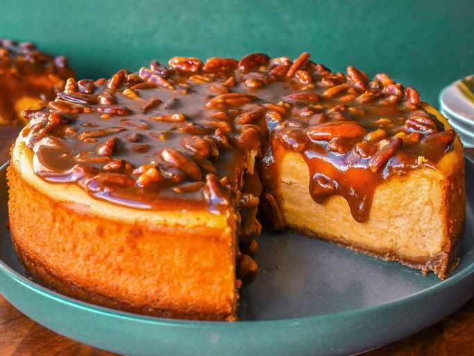

Gateau au fromage aux pommes de terre douce

Ce cheesecake à la patate douce a une texture lisse et crémeuse avec une croûte de miette beurrée et une délicieuse garniture de praline de noix de pécan. Parfait pour un dessert d'automne ou d'hiver riche et savoureux.
Ingrédients
- 1 1⁄4 tasse de miettes de craquelin de graham
- 1⁄4 tasse de sucre blanc
- 1⁄4 tasse de beurre, fondu
- 1 1⁄2 tasse de purée de patate douce en conserve
- 3 paquets (8 onces) de fromage à la crème, ramolli
- 7⁄8 tasse de sucre blanc
- 1⁄3 tasse de crème sure
- 1⁄4 tasse de crème fouettée lourde
- 3 gros œufs, température ambiante
- 3⁄4 tasse de sucre brun emballé
- 1⁄4 tasse de beurre pour la garniture
- 1⁄4 tasse de crème fouettante lourde pour la garniture
- 1 tasse de noix de pécan hachées pour la garniture
Étapes
- Rassemblez tous les ingrédients. Préchauffer le four à 350 degrés F (175 degrés C).
- Mélanger les miettes de craquelin de graham, 1/4 tasse de sucre et 1/4 tasse de beurre fondu dans un bol jusqu'à ce qu'ils soient combinés. Appuyez fermement et uniformément sur le mélange de miettes sur le fond et légèrement sur les côtés d'une poêle à ressort de 9 1⁄2 pouces. Cuire au four pendant 10 minutes; retirer du four et réserver. Gardez le four allumé.
- Battre le fromage à la crème et 7/8 tasse de sucre blanc jusqu'à ce qu'il soit lisse. Mélanger dans de la crème sure, 1/4 tasse de crème et de la purée de patate douce. Battre dans les œufs un à la fois, en se fondant bien après chacun. Verser le remplissage en croûte.
- Cuire au four préchauffé jusqu'à ce qu'un testeur inséré près du centre en ressorte propre, environ 1 heure (le centre peut encore être légèrement jiggly). Éteignez le four. Laissez reposer le gâteau 1 heure au four avec porte entroulé.
- Pour faire le garniture de praliné: Mélanger la cassonade et 1/4 tasse de beurre dans une petite casserole lourde. Remuer à feu doux jusqu'à ce que le sucre se dissolve. Augmenter la chaleur et porter à ébullition. Mélanger dans 1/4 tasse de crème, puis ajouter les noix de pécan.
- Verser le praline chaud en garniture sur cheesecake. Conserver les restes de cheesecake au réfrigérateur.
- Servir et profiter!